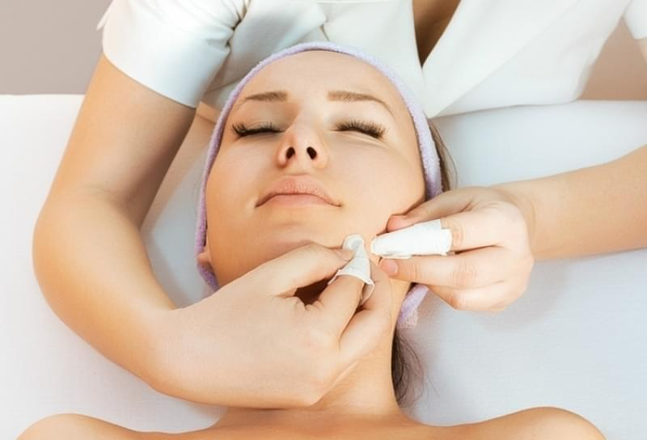

Tratamentos Faciais
Tratamento Facial 1
Hidratação facial
A Hidratação Facial é um tratamento estético que tem como objetivo revitalizar a pele, tornando-a mais saudável, macia e hidratada. Esse procedimento consiste na aplicação de produtos específicos, como máscaras hidratantes e cremes, que penetram profundamente na pele, fornecendo nutrientes essenciais e combatendo os efeitos danosos do meio ambiente e da idade.
Tratamento Facial 2
Limpeza de pele com extração + tratamento indicado para cada cliente
A limpeza de pele com o extração é o tratamento profundo feito atraves das extrcaoes dos comedoes, associado ao vapor de ozonio que por sua vez ameniza a dor. E os tratamentos sao personalizados para cada cliente.
Tratamento Facial 3
Indicação de home care
Os cuidados diários podem potencializar e prolongar os resultados dos procedimentos. Montamos os home care adequado para cada cliente para que se tenha os cuidados necessarios em casa.
Tratamento Facial 4
Argiloterapia asociado com óleo essencial.

A utilização de argila e os oleos essenciais potencializa os tratamentos esteticos por serem de origem naturais, evitando o efeito rebote.
.png)
.jpg)